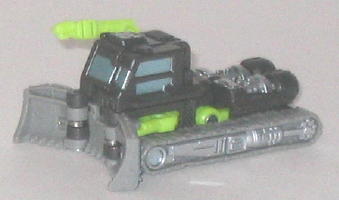
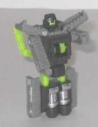
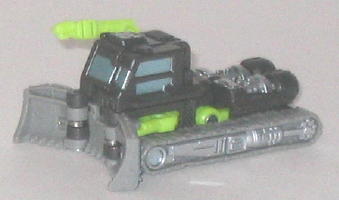
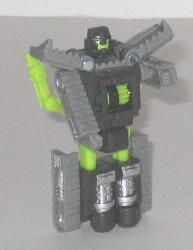
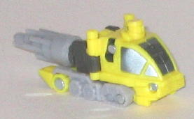
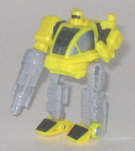

Scattorbrain
Scattorbrain
 
Allegiance : Decepticon, Minicon
Difficulty of Transformation : Very Easy
Color Scheme : Gray, very dark gray, light leafy green, and some silver and metallic light silvery blue
Individual Rating : 6.1
Scattorbrain
vs. Monocle
Size
: Mini-Con (2-pack)
Overall Rating
: 6.3
 Scattorbrain
Scattorbrain


Allegiance
: Decepticon, Minicon
Difficulty of Transformation
: Very
Easy
Color Scheme
: Gray, very dark gray,
light leafy green, and some silver and metallic light silvery blue
Individual Rating
: 6.1
(NOTE: Because this toy is a repaint, this is not a full-blown review. This mainly covers any changes made to the toy and the color scheme, and merely compares it to Armada Iceberg. For a review on the mold itself, read the review of Armada Iceberg here .)
Scattorbrain's color
scheme definitely blends in with what his bio describes as his home-- the
Moon. Two shades of gray make up about 70-80% of the color scheme on Scattorbrain,
but that's not to say he's dull-- the light green plastic parts add some
nice contrast to the gray while not being used enough to look gaudy. The
silver paint apps and the metallic light blue used for the windows also
help to add a bit more contrast and make Scattorbrain look fairly cool
overall, and appropriate for a Decepticon-allied Transformer on the Moon.
No mold changes have
been made to Scattorbrain, though he does have a new silver Decepticon
faction symbol painted ON TOP OF his molded-in Minicon symbol, which I
think was a pretty bad placement choice...
 Monocle
Monocle


Allegiance
: Autobot, Minicon
Difficulty of Transformation
: Very
Easy
Color Scheme
: Light milky gray,
yellow, and some very dark gray, black, and metallic bluish silver
Individual Rating
: 6.5
(NOTE: Because this toy is a repaint, this is not a full-blown review. This mainly covers any changes made to the toy and the color scheme, and merely compares it to Armada Drill Bit. For a review on the mold itself, read the review of Armada Drill Bit here .)
Monocle has a cool name,
but NOT a cool color scheme. Yellow and light gray, with a few bits of
black, is hardly an eye-catching color scheme, and the particular shade
of yellow used is a bit garish as well. On top of this, the number of paint
apps on Monocle has been very noticeably reduced when compared to Drill
Bit-- the only paint apps he has that aren't on his windows are two patches
on his feet and a rather sloppy black paint apps across his optics. (I
guess the latter is to make it look like he only has one optic, so he fits
the name "Monocle".) The complete lack of paint apps on his arms and legs
make him look almost prototypish. The comparatively large Autobot symbol
added to the front of his chest/cockpit window also looks rather goofy,
too.
No mold changes have
been made to Monocle. The left foot on mine is at a slight angle when compared
to the right, but I haven't heard of this being a widespread problem.
Scattorbrain has a pretty
cool, Moon-ish color scheme, though I do think that the mold's coloration
as
Armorhide
looked a bit better. Monocle,
though, has a pretty bad color scheme with very few paint apps-- I'd definitely
recommend him the least out of the mold's three paint jobs. Overall, you're
probably better off getting the
Armada Road
Wrecker Team
and Armada Rhinox w/ Armorhide if you want the best paint
jobs these molds have gotten.
Review by Beastbot